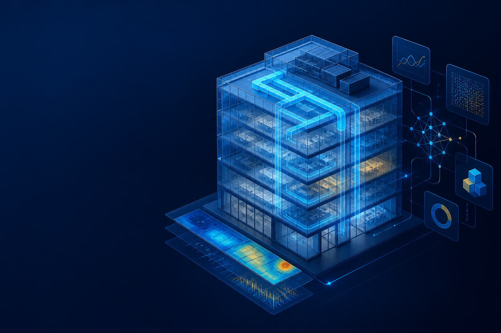

⌘
Edit models safely
Inspect and edit OpenStudio models with reviewed SDK patterns and a durable workflow state.
OpenStudio AI is the front end for Codex and Claude Code. It gives energy modelers one guided workflow while aligned MCP providers—starting with NLR OpenStudio-MCP—can execute specialized work behind the scenes.

Modelers work through the AI host they already use. OpenStudio AI coordinates the workflow, preserves the engineering record, and connects the right local execution path when it is available.
Inspect and edit OpenStudio models with reviewed SDK patterns and a durable workflow state.
Create air loops, coils, fans, terminals, schedules, and VAV reheat systems in the right order.
Prepare and run simulations with validation steps that surface issues before they become results.
Query SQL-backed results, interpret performance, and identify the next modeling decision.
The MCP server carries the operational context that lets an agent work methodically across a complex modeling task.
Records structured model changes, decisions, and remaining work throughout a session.
Keeps assumptions, model state, validation findings, and next steps visible to the workflow.
Runs scenario simulations in isolated sandboxes to prevent output collisions.
Retains essential analysis artifacts while limiting disposable output that consumes local storage.
Uses reviewed, task-relevant OpenStudio SDK knowledge instead of guessed API behavior.
OpenStudio AI is the primary distribution and workflow channel for agentic energy modeling. It gives modelers a consistent experience while partner teams continue to build and evolve their own MCP providers.
The plugin connects modelers to Codex and Claude Code, providing the shared skills, workflow controls, engineering record, and final handoff.
NLR continues to develop OpenStudio-MCP. When configured locally and cleared by preflight, it exclusively executes model, measure, simulation, and result work for its phase.
OpenStudio AI remains the control plane: it records provider decisions, blackboard state, artifact provenance, learning evidence, and handoff.
Additional national-laboratory providers are being aligned with OpenStudio AI, expanding capabilities without fragmenting the modeler’s experience.
NLR is an optional local backend, not a requirement. If it is unavailable, incompatible, or cannot express a complex operation, OpenStudio AI records the boundary and continues through its local workflow—without silently mixing providers. NLR’s advanced setup uses Docker and a scoped shared workspace. Read the NLR setup guide or visit NLR OpenStudio-MCP.
You › Add a VAV reheat system to this model. OpenStudio AI › I’ll inspect the model, create the air loop, then add terminals, coils, controls, and validation. ✓ Model topology inspected ✓ Air loop and supply fan created ✓ Heating and cooling coils connected ✓ VAV terminals configured ✓ System validation passed You › Run the simulation and summarize the results. ✓ Simulation complete · Results ready to query
Instead of asking an agent to improvise a complex HVAC model, OpenStudio AI coordinates the dependent steps and checks the work before simulation.
Keep expert judgment in the loop while removing the repetitive coordination work.
OpenStudio AI ships as a local marketplace for both Codex and Claude Code. Choose the client your team uses.
codex plugin marketplace add <path-to-this-marketplace-folder>In the Codex plugin UI, install openstudio-ai from openstudio-ai-local.
In a new task, ask Codex to run setup-openstudio-ai.
/plugin marketplace add <path-to-this-marketplace-folder>/plugin install openstudio-ai@openstudio-ai-local
/reload-pluginsRun /openstudio-ai:setup-openstudio-ai in Claude Code.
OpenStudio AI combines a shared MCP interface with focused, composable skills—then connects compatible provider backends under the same workflow.
Inspect models and apply durable OpenStudio SDK patterns for geometry, schedules, systems, and more.
openstudio-sdk-model-editorBuild fans, coils, air loops, outdoor-air systems, VAV terminals, sizing, and validation workflows.
HVAC workflow skillsPrepare models, run simulations, and retrieve SQL-backed results without leaving the workflow.
simulate · query-resultsTrack decisions, validate system state, and repair common issues before the next workflow phase.
state · repair · doctorPropose candidate measures and capture repeatable lessons from modeling sessions.
propose-measurePreflight and delegate a compatible NLR provider phase while retaining OpenStudio AI workflow records and handoff.
delegated-nlr-modelingInstall the plugin, set up the local runtime you need, and keep a consistent engineering experience as new provider MCPs join the ecosystem.